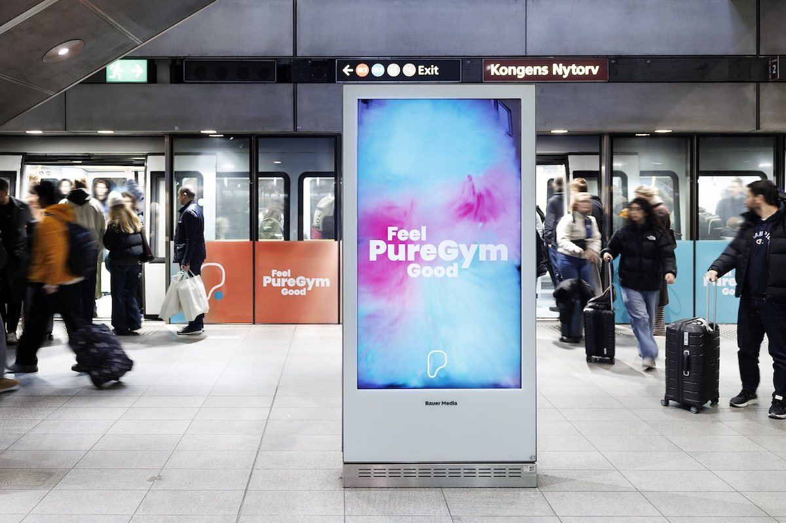
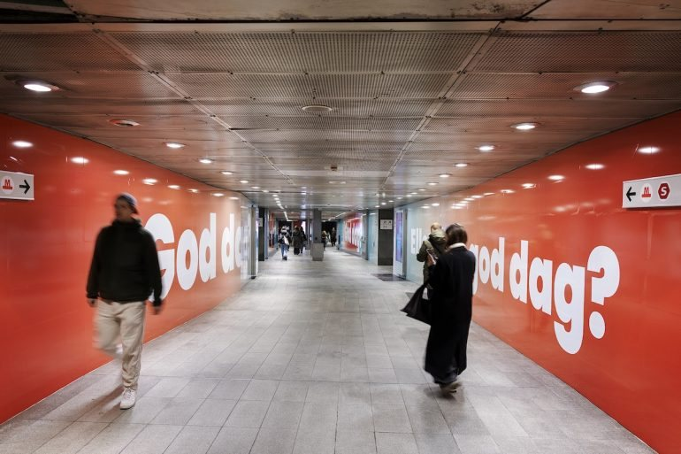
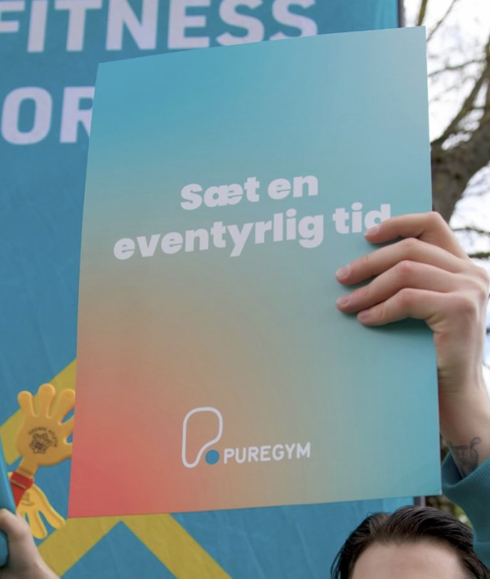

The brief
Turn the UK brand direction into a Danish marketing plan, roll out the Feel PureGym Good rebrand in Denmark and run local marketing for every Danish gym on a local budget of more than DKK 2 million a year.
What came of it
- Feel PureGym Good went live in Denmark in February 2026 across outdoor, shopping centres and the metro.
- Around DKK 250,000 saved by renegotiating vendor contracts and improving production workflows.
Decisions that mattered
How far the humour could go
Feel PureGym Good uses subtle humour, and there is more room for that in the UK than in Denmark. Copenhagen and North Jutland are also very different places, so adapting the platform locally meant judging how it would land in each part of the country.
Where to fight a new competitor
When a competitor opened nearby, I prioritised the gyms closest to it that could also carry the response best with the offer we could put in. Where we could bring Reformer Pilates in quickly, we did. Where we could not, we pushed the advantages the competitor did not have.
Who Reformer was for
The numbers showed that Reformer mostly attracted women. We wanted it to appeal to men as well, so we changed the content to reach them.



Feel PureGym Good in the Copenhagen metro, and local campaign material. Photos: PureGym.
What I did
- Feel PureGym Good. Worked directly with Forte Advice and the media agency Initiative on the Danish rollout across outdoor, shopping centres, the metro, radio, in-gym branding and POS.
- A Danish plan. Built the Danish marketing plan together with Global Brand in the UK and took part in the strategic meetings there.
- 24/7 and Reformer Pilates. Part of the team behind both launches. I built the Danish message matrix, and we made national flyers, stickers and POS.
- Local, on the ground. Before making local POS for a gym, I always went there to understand the town and the people who train there. Local campaigns and POS led people on to the online sign-up.
- Commercial priorities. Developed offer prices with Commercial based on competitor monitoring and KPIs, and reviewed NPS and membership flow with Business Development every two weeks.
- 100+ local activations and 85 renovations, run as projects with gym managers, Operations and vendors.
- Merchandise and materials. Chose the merchandise, giveaways and campaign materials and followed up on which offers and materials worked best.
- People and partners. Managed a marketing coordinator day to day with weekly 1:1s, plus agencies, a freelance copywriter, printers and a Danish logistics partner. Presented insights and recommendations to Danish leadership and the UK head office.
She showed me trust, gave me responsibility and always gave constructive feedback, which was essential for my development.